Hey there,
At the recent DockerCon (virtual) Conference, Docker announced a more tightened partnership with Microsoft, boosting the adoption and integration of Docker containers for Windows Server as well as Azure-running workloads. A first announcement involved a cool integration with Azure Container Instance (ACI), a low-level container runtime on Azure, allowing you to run a container without the typical complexity. While ACI has been around for 2 or more years already, it now becomes possible to manage and run your ACI-based containers directly from the Docker commandline.
And that’s exactly what I will guide you through in this post.
Prerequisites
- This capability is in preview for now, and requiring Docker Desktop Edge 2.3.2 (I’ll show you how to upgrade if you already Run Docker)
- An Azure subscription, allowing you to deploy and run Azure Container Instance
- A sample Docker container (you can grab my example if you want, or use any other you like)
Upgrading to Edge Desktop
I was already running Docker Desktop on my Windows 10 machine, using Windows Subsystem for Linux (WSL) integration; I actually wrote another post on this a few weeks ago, on how to get this up and running.
- From the Docker icon in the taskbar, select “About Docker Desktop”; this will show you the current version
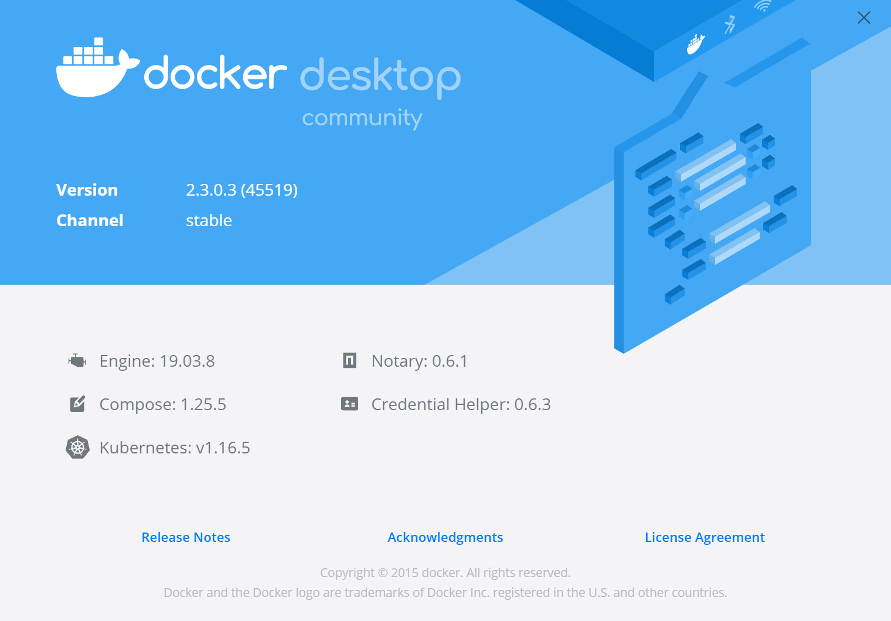
As you can see, I’m using the stable version 2.3.0.3
- Since I keep my demo containers in Docker Hub, I wasn’t too worried about losing them. However, if you want to keep a backup of your current Docker images, know you can store these in a Linux-tar file, using
docker save -o <nameforbackup.tar> <docker_image_name>
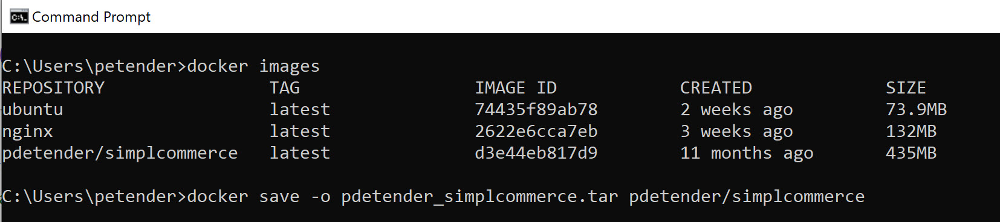
- Uninstall Docker Desktop, by searching for “Docker Desktop” in the Start Menu, right-click it and select “Uninstall”
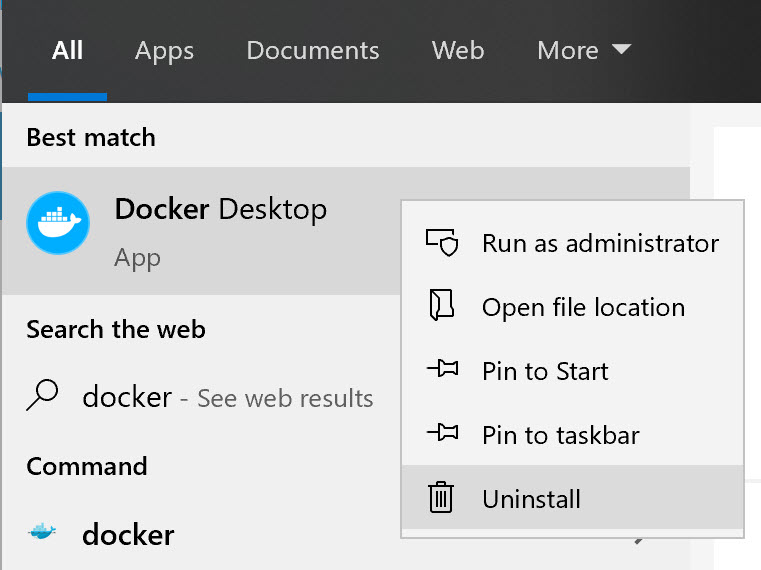
Follow the instructions to have the software removed from your machine.
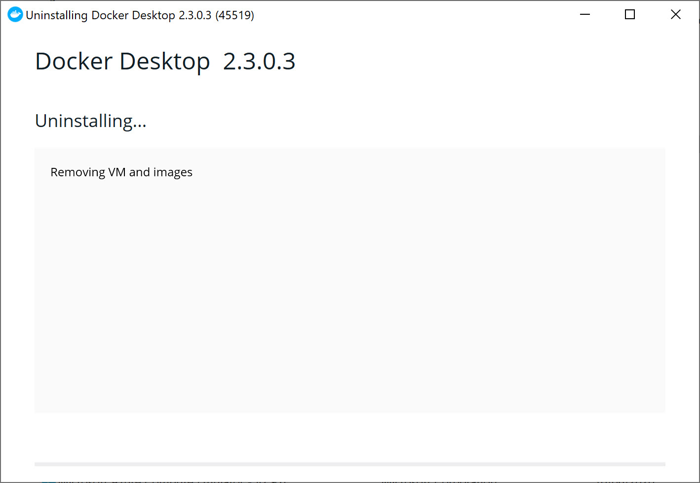
- From the Docker website, download the Docker Desktop Edge edition
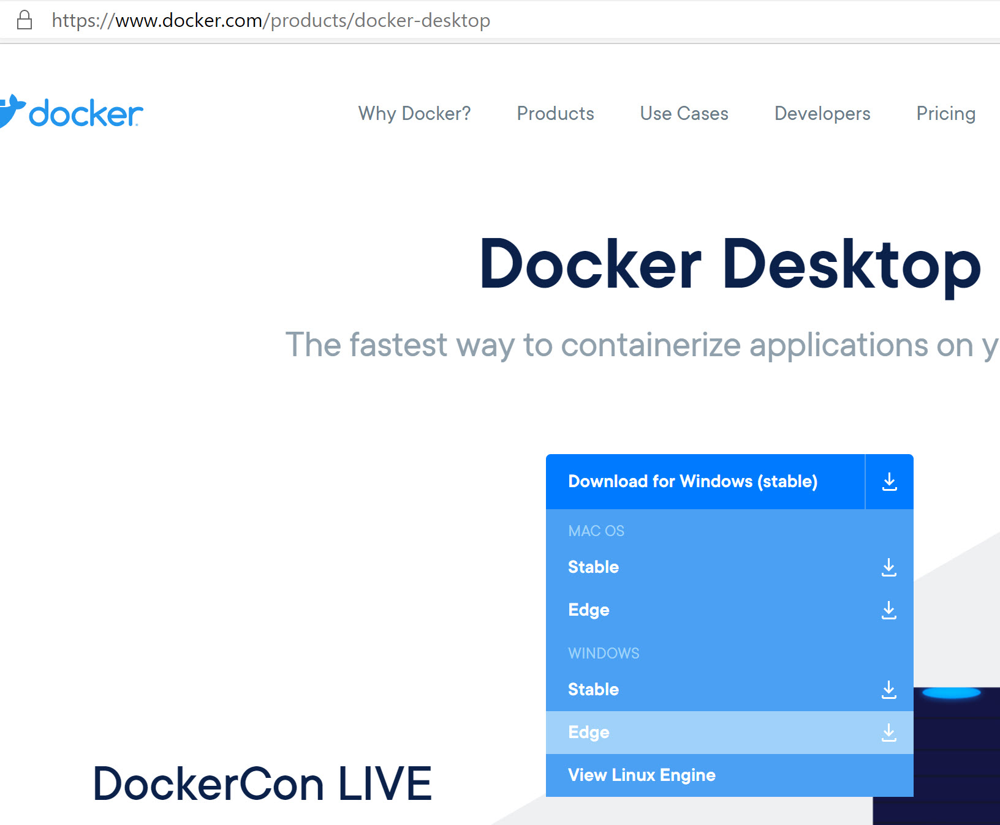
Accept the options to create a desktop shortcut and allow the integration with WSL (if that is what you were using before…)
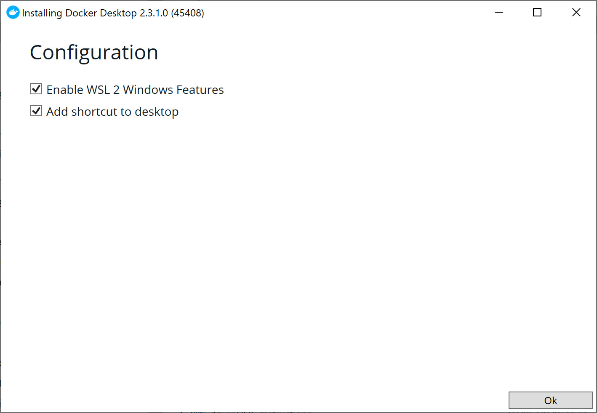
Wait for the component install to complete
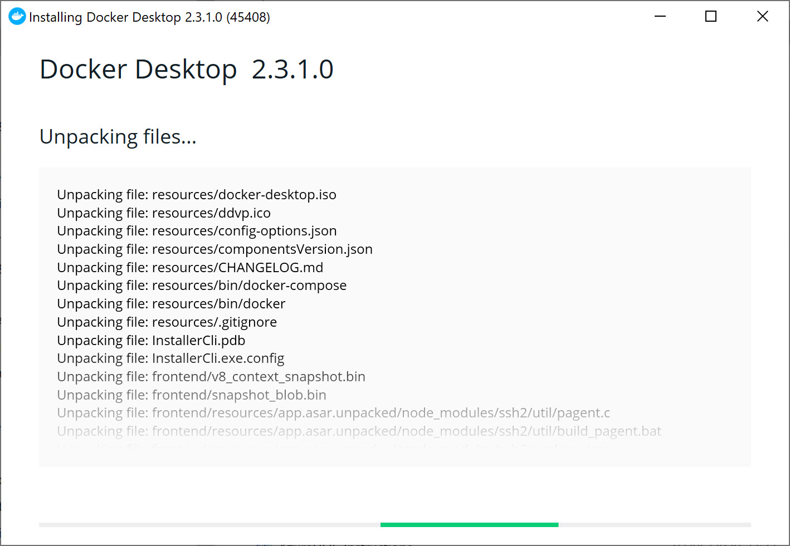
After only a few minutes, Docker Desktop should run again fine. You can validate this from the Docker icon in the taskbar’s notification area; if it shouldn’t start automatically, you can start it from here as well, by right-clicking on it. (FYI, I actually had to restart my machine before it actually ran fine, but I am on Windows 10 Insider Preview 19640, if that should matter at all :))
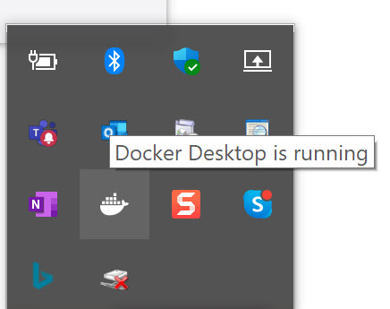
- Confirm Docker Desktop Edge is running fine from a Docker Perspective , by opening your Command Prompt, and running
Docker info
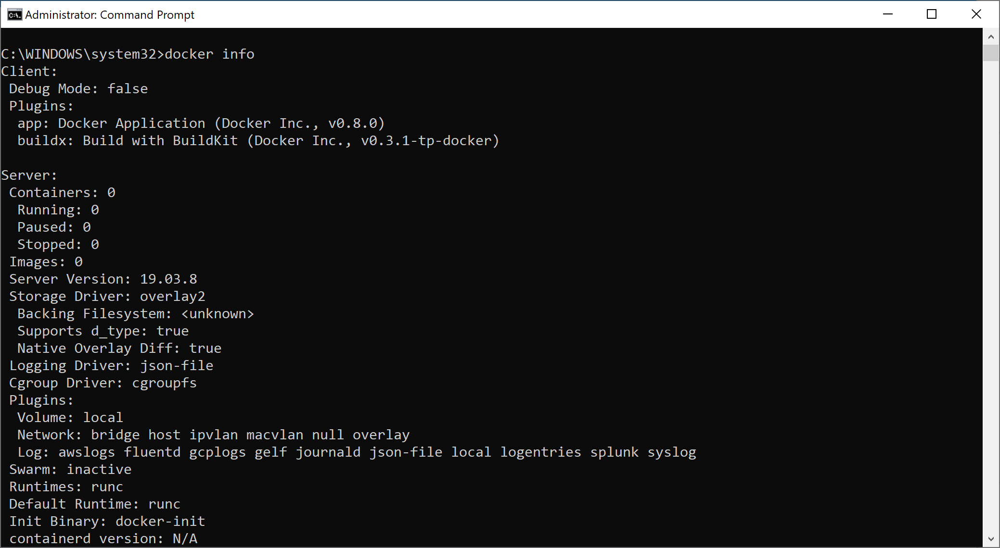
Nice, that upgrade went smooth already!
Before we move on to the next step, let’s restore our previously used Docker Image (if you created the backup), by running the following command:
Docker load -i <name_of_the_backupimage>.tar
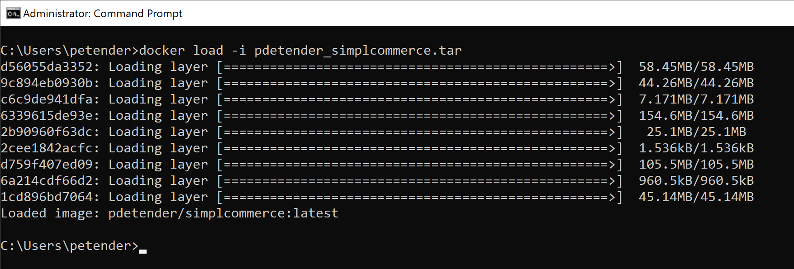
and validate by running
docker images
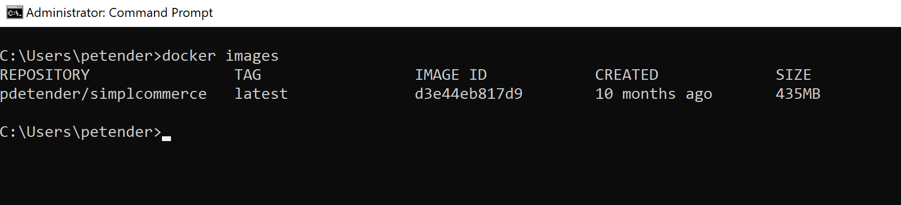
On to the next step… Now we are running the latest Docker Desktop Edge, it is time to play around with the newest Azure Container Instance (ACI) integration - which is the whole point of this blog post.
In short, you go through the following steps:
- Authenticate to Azure, directly from Docker
- connect Docker to Azure Container Instance by creating a “Docker Context” (think of this as an environment with its own settings, much like dev/test, staging, production. Or in our case, the “default context” being your local machine running Docker, and the other one being “Azure”)
- Allocate a Docker Hub image to run as an Azure Container Instance, and run it
Authenticate to Azure, directly from Docker
The first feature that is part of the Docker Desktop Edge, is allowing us to authenticate to Azure, directly from the Docker engine. Initiate the following command:
Docker Login Azure
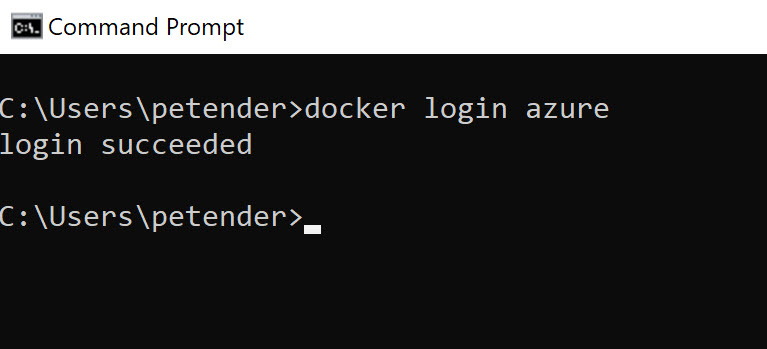
This will prompt you for your Azure subscription credentials in a browser, just like a regular Azure authentication prompt (this also recognizes MFA, to make this a rather secure option)
Creating a Docker Context
From your Command Prompt, create a new Docker Context, by running the following command:
docker context create aci <name_for_the_context>
Based on the authenticated logon from the previous step, it will list up the different Azure subscriptions linked to your account; using the “arrow” keys, you can select the subscription you want to use. Next, it will list up the different Resource Group within your subscription.
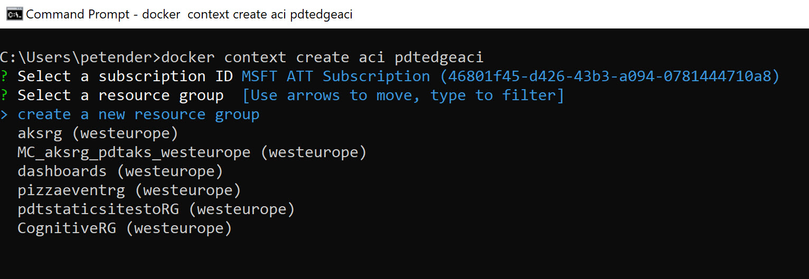
If you don’t want to use an existing Resource Group, you can create a new one:
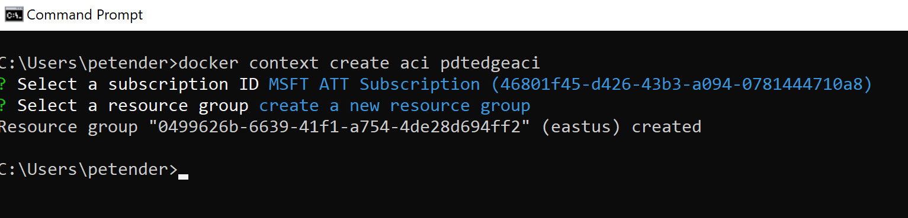
While this works, the naming convention for the newly created Resource Group is probably not going to work in any organization (naming convention policies etc…); so let’s run this command again, and create a new context, based on an already existing Resource Group we want to use, by running the following command:
docker context create aci <name_for_the_context> --location <azure_region_name> --resource-group <name_of_the_Azure_RG> --subscription <name_of_the_Azure_subscription>
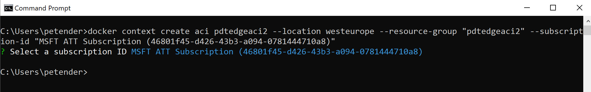
The Docker Context, pointing to Azure ACI is available now. Let’s continue with running an actual container in the next step.
Running your ACI using a Docker Hub image
Running a Docker container within the ACI instance, is based on the exact same Docker command you would use if it was running on your local machine:
docker run -d -p <portmapping> <name_of_the_container_image>
which looks like this for my example:
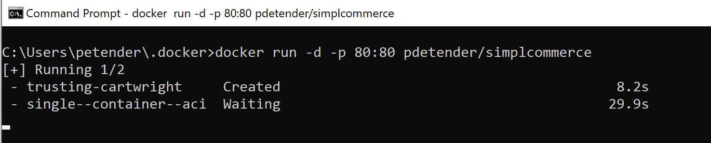
where
- 80:80 tells the container to run the workload on port 80, and expose it to the outside world on port 80 as well
- pdetender/simplcommerce points to an e-commerce application container I have available in my Docker Hub repository
At first, a new unique name for the Docker container runtime will get created (the “trusting-cartright”) in my example, followed by the deployment of a new Azure Container Instance
In less than a minute, the job is completed successfully. Time to validate the running container. This - again - is identical to validating your running Docker container instances on your local machine:
docker ps
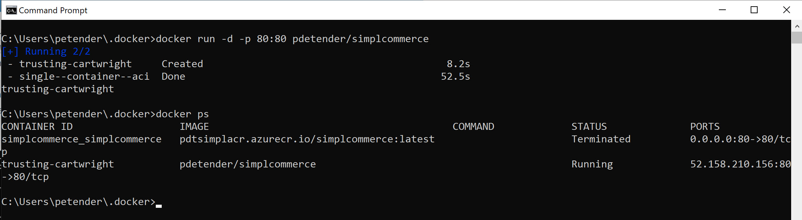
which shows you the running container instance, as well as the necessary details about the public-IP address of the instance. From your browser, connect to this public IP address, and see our sample workload in action:
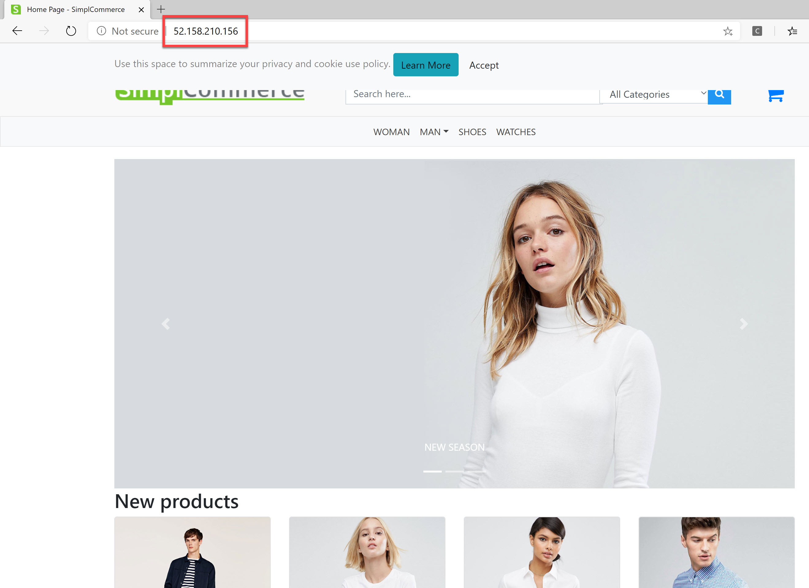
You can also validate this from the Azure Portal, by connecting to the Azure Container Instance (this could also be done from Azure CLI or Azure PowerShell to be complete…)
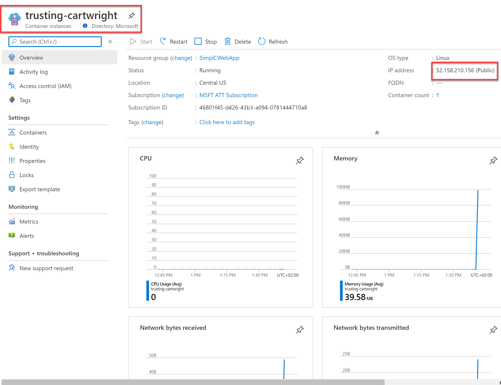
Wonderful! This new Docker Edge integration with ACI is a nice improvement, and saving several steps from the “old way”.
This completes the core of what I wanted to discuss in this post, showing you the nice capabilities from Docker Desktop Edge, to natively deploy and run an Azure Container Instance.
Running your ACI using an Azure Container Registry (ACR) image
<these steps are not required anymore as part of the process, but just wanted to do some additional testing :)>
The previous example was using a public Docker Hub container image. So I was wondering if this would also work for a (private) Docker image I already have in my Azure Container Registry. Let’s give it a try:
- create a new Docker Context for ACI
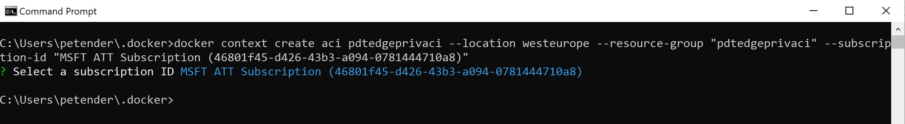
- Run the Docker Container, pointing to the Azure Container Registry image
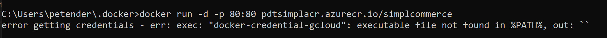
Hmm, that’s an interesting error message… something “gcloud” related (=Google Cloud Platform :)). After some searching on the interwebs, it seems like my Docker instance is having some default authentication providers in its config.json file… interesting
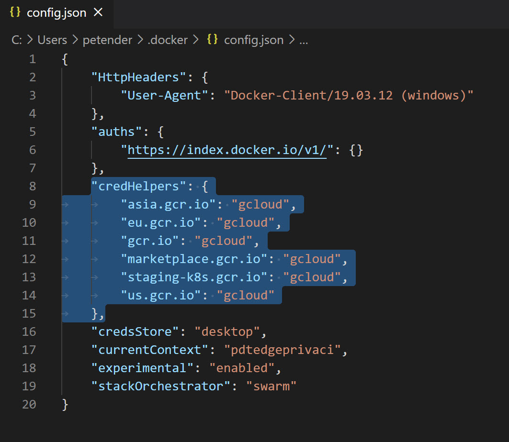
Apparently it is safe to remove the section “CredHelpers”, saving the file and running the “Docker Run” again:
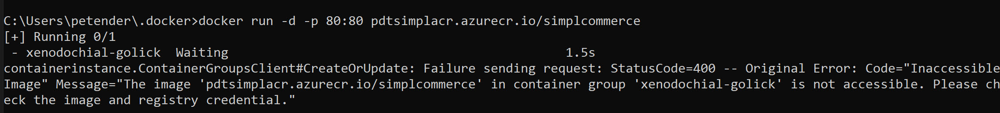
While that weird gcloud error is gone, we are not quite there yet. But this error makes more sense to me. What it says here, is that the Docker Context cannot connect to the Azure Container Registry. Of course not, I need to authenticate to ACR first (az acr login), just like when I am running this locally on my machine:
where -g refers to the name of the Resource Group having the Azure Container Registry, and -n refers to the name of the Azure Container Registry itself
which works much better now; similar to the first example, a new Azure Container Instance is getting deployed:
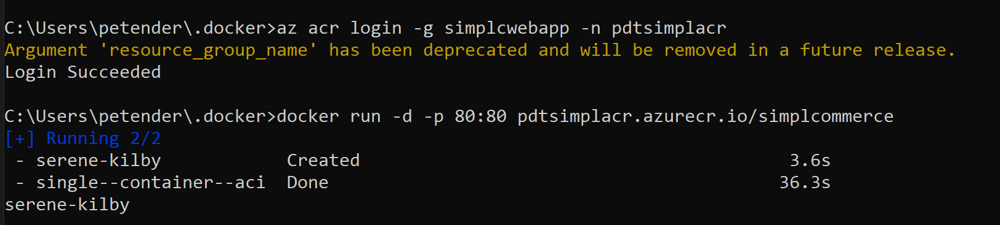
Let’s validate once more by initiating “docker ps”, which shows the following:
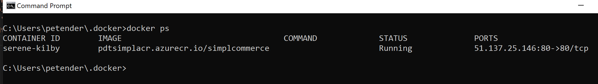
and checking from the browser, if the workload is actually showing what it needs to show (note it is the same workload, just a different product category):
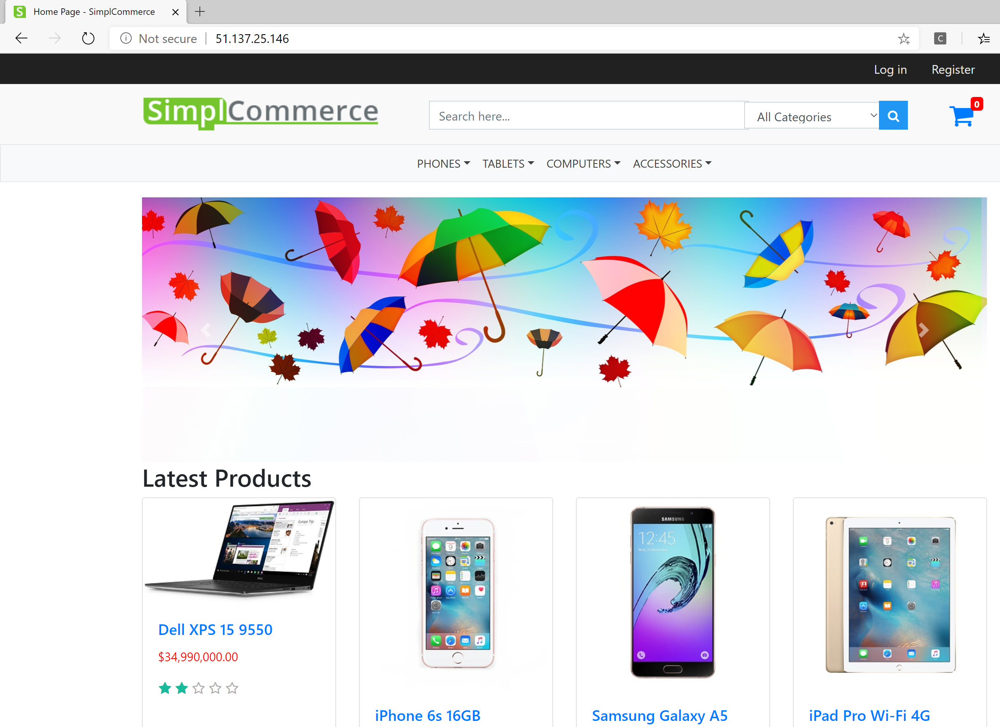
and lastly, checking back on what it looks like from the Azure Portal
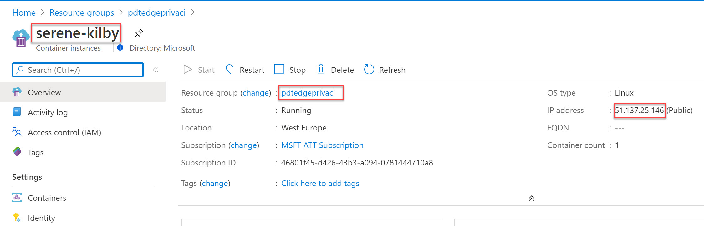
I love this!!
Summary
In this post, I introduced you to a brand new capability from Docker Desktop Edge, providing a direct (native almost) integration with Azure Container Instance. This allows you to deploy and run a container instance on Azure, without much hassle. I showed you how this works with public Docker Hub images, as well as with more private images from an Azure Container Registry.